| 항목 | 내용 |
|---|---|
| 대상 | 프로젝트를 처음 맡는 개발자 |
| 활용 방법 | 화면에서 시작해 API, 서비스, DB 필드까지 추적 |
| 읽는 순서 | 문서 안내 → 화면/컴포넌트 → API/함수 계약 → DB/ERD → 유지보수/장애 대응 |
| 적용 범위 | 프런트엔드(Vue 3), 백엔드(Spring Boot), 데이터베이스(PostgreSQL 설정 + schema.sql), 운영 절차 |
| 캡처 기준 | 실제 실행 시도 후 실패하여 코드 기반 재구성 · 설명용 데이터 이미지 사용 |
실행 시도 결과: Ai-Diary-vue 실행 중 src/page/ConfirmPassword2.vue 파일 경로 불일치로 Vite 의존성 스캔 실패(라우터는 ConfirmPassword2.vue 참조, 실제 파일은 confirmPassword2.vue).
src/page)와 재사용 컴포넌트(src/components)로 구성되고, axiosInstance가 공통 인증 헤더와 401 재시도를 처리합니다.AuthController, DiaryController, KakaoController, TimeController가 API 진입점을 제공하고, AuthService/DiaryService/KakaoService가 핵심 로직을 수행합니다.users, diary, refresh_token) 중심으로 읽고 쓰며, schema.sql에는 추가 테이블(email_verification, chats, diary_views, webrtc_connections)이 정의되어 있습니다.데이터 이동(요약):
화면 입력 -> axiosInstance -> Controller -> Service -> Repository/JPA -> DB -> JSON 응답 -> 화면 렌더
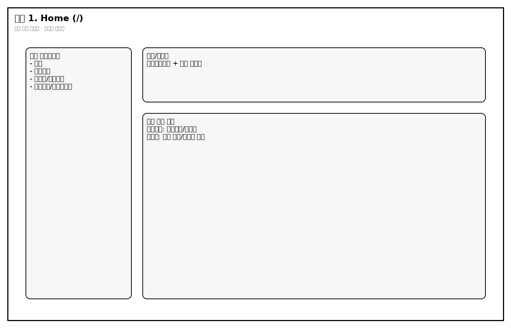
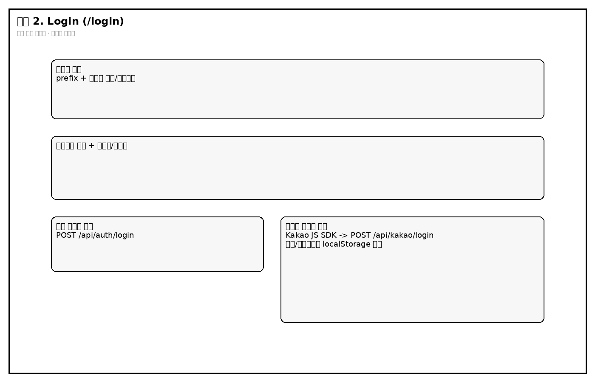
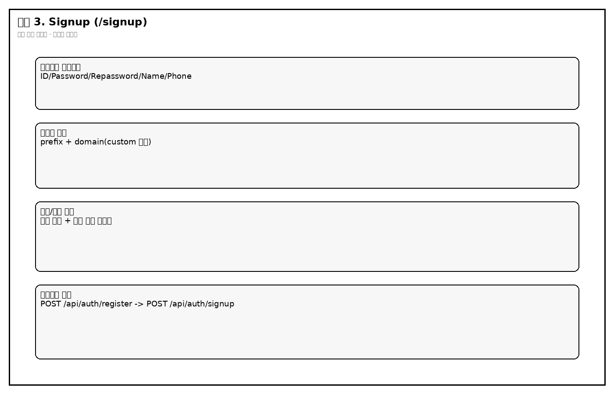
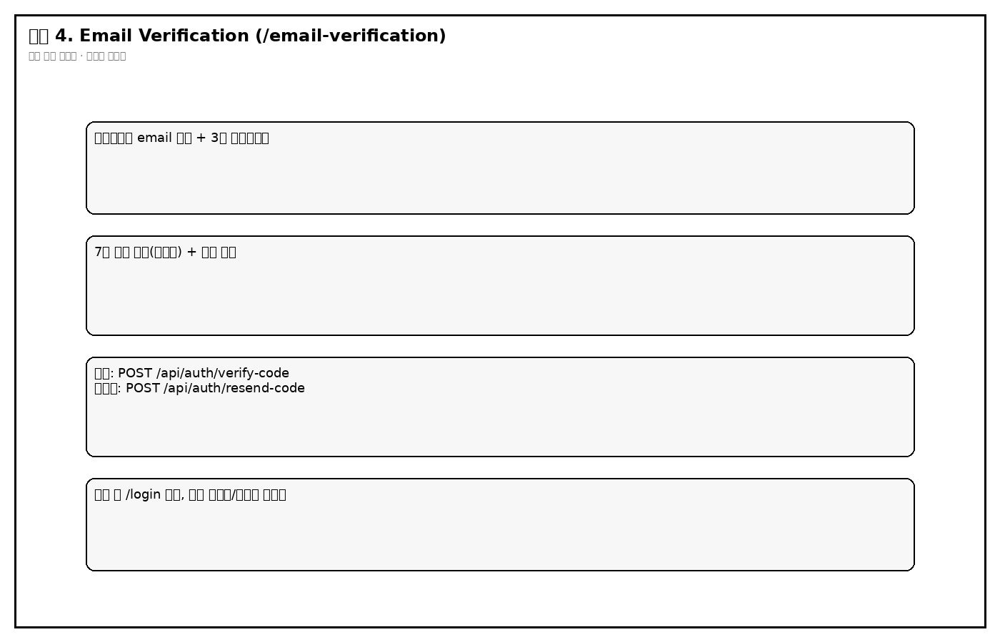
/): 로그인 상태(localStorage)에 따라 CTA 버튼이 달라지며, 비로그인은 로그인/튜토리얼로, 로그인 사용자는 작성/목록으로 이동합니다./login): 일반 로그인과 카카오 로그인을 모두 제공하고 성공 시 토큰과 사용자 식별값을 localStorage에 저장합니다./signup): 입력 검증 후 회원 생성 요청을 보내고, 이어서 이메일 인증코드 전송 API를 호출합니다./email-verification): 3분 타이머 안에 코드 확인을 수행하며 실패/만료 시 재전송 경로로 분기합니다.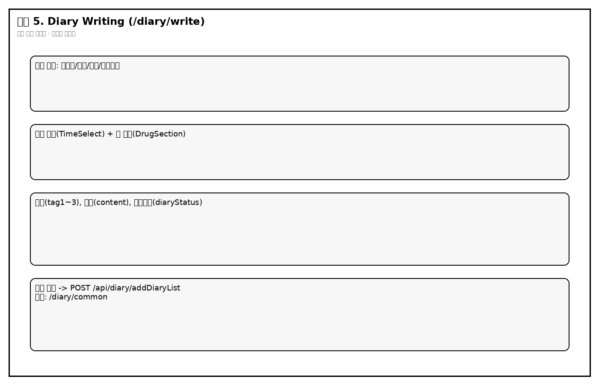
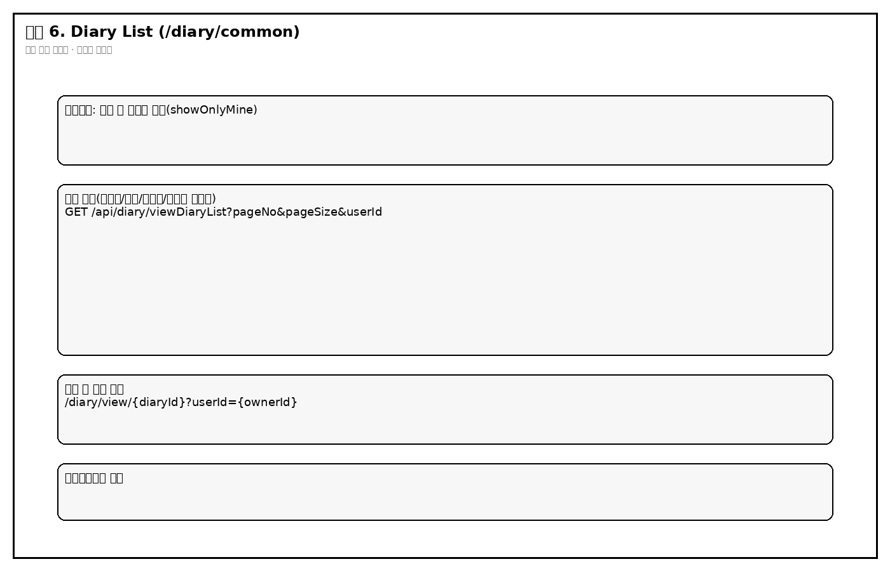
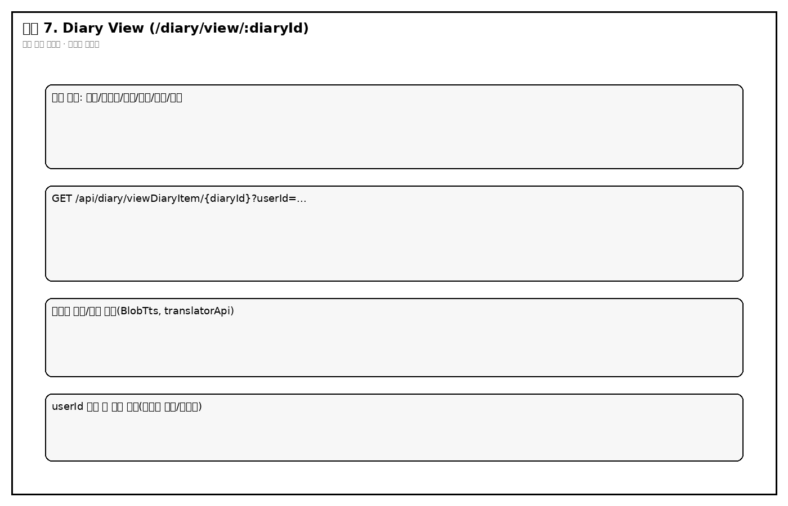
/diary/write): 날짜/작성자/제목/감정 필수 검증 후 일기를 저장하며, 수면 시간/약 복용 정보를 함께 전송합니다./diary/common): 공개/비공개와 내 글 필터를 조합해 목록을 보여주고 페이지네이션을 처리합니다./diary/view/:diaryId): diaryId + userId 조합으로 상세를 조회하고 태그/감정/번역 기능을 연결합니다.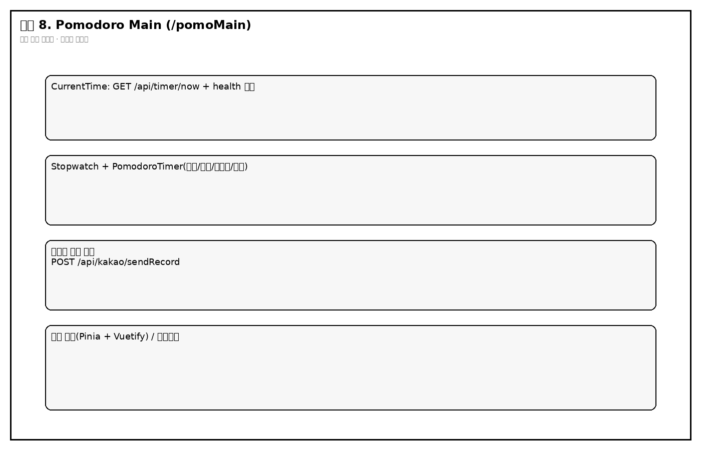
| 영역 | 파일 | 책임 | 핵심 기능(1~2문장) |
|---|---|---|---|
| 라우팅 | Ai-Diary-vue/src/router/index.js |
페이지 매핑 | 인증/다이어리/포모도로 라우트를 연결하며 일부 보호 로직을 beforeEach에서 처리합니다. |
| API 클라이언트 | Ai-Diary-vue/src/unit/axiosInstance.js |
공통 HTTP 정책 | 토큰 우선순위(jwt/access/kakao)를 Authorization에 주입하고, 401 시 refresh API로 재발급 후 원요청을 재시도합니다. |
| 로그인 UI | Ai-Diary-vue/src/page/LoginPage.vue |
사용자 로그인 입력/분기 | 일반 로그인과 카카오 SDK 로그인 흐름을 분리 처리하고 성공 시 localStorage를 갱신합니다. |
| 회원가입 UI | Ai-Diary-vue/src/page/SignupPage.vue |
계정 생성 + 코드 전송 | 로컬 검증 후 register 호출, 성공 시 signup 호출로 이메일 인증 코드를 보냅니다. |
| 일기 작성 UI | Ai-Diary-vue/src/page/DiaryWriting.vue |
일기 입력/저장 | 필수값 검증과 공개설정, 태그, 수면/복약 정보를 한 요청으로 묶어 저장 API에 전달합니다. |
| 일기 목록 UI | Ai-Diary-vue/src/page/DiaryList.vue |
목록/필터/페이징 | 서버 페이지네이션 응답을 받아 비공개 정책과 내 글 필터를 화면에서 최종 반영합니다. |
| 일기 상세 UI | Ai-Diary-vue/src/page/DiaryView.vue |
상세 조회/표시 | 라우트 파라미터를 사용해 상세 일기를 조회하고 감정 텍스트/태그/번역 표시를 구성합니다. |
| 인증 API | Ai-Diary-server/.../controller/AuthController.java |
회원/토큰 엔드포인트 | 로그인, 가입, 인증코드 확인/재전송, 탈퇴, 비밀번호 변경, 토큰 재발급 API를 제공합니다. |
| 인증 서비스 | Ai-Diary-server/.../service/AuthService.java |
인증 비즈니스 | 이메일/비밀번호 검증, 인증코드 생성/메일 발송, 탈퇴/비밀번호 변경 로직을 수행합니다. |
| 다이어리 API | Ai-Diary-server/.../controller/DiaryController.java |
일기 조회/저장 | 목록/상세 조회와 작성 요청의 사용자 일치성 검증 및 응답 조립을 담당합니다. |
| 다이어리 서비스 | Ai-Diary-server/.../service/DiaryService.java |
다이어리 도메인 로직 | 리스트 페이징 변환, 상세 조회, 엔티티 생성 및 저장을 수행합니다. |
| 카카오 API | Ai-Diary-server/.../controller/KakaoController.java |
소셜 로그인/카톡 전송 | 카카오 access token으로 사용자 정보를 조회하고 내부 JWT를 발급하거나 기록 메시지를 카카오 API로 전달합니다. |
| 보안 필터 | Ai-Diary-server/.../util/JwtAuthenticationFilter.java |
요청 인증 컨텍스트 구성 | ** 검증해 SecurityContext에 CustomUserDetails를 주입합니다. |
| 토큰 유틸 | Ai-Diary-server/.../util/JwtUtil.java |
JWT 발급/검증 | access/refresh 토큰 생성, refresh_token 저장, 토큰 검증/재발급을 처리합니다. |
| 데이터 모델 | Ai-Diary-server/.../user/domain/User.java, .../diary/domain/Diary.java |
DB 매핑 | 사용자/일기 컬럼과 엔티티 라이프사이클(@PrePersist)을 정의합니다. |
| 화면 요소 | 함수/메서드 | 입력 | 처리 조건 | 반환값 | 부수 효과 |
|---|---|---|---|---|---|
| 로그인 버튼 | LoginPage.onClickLoginButton |
email, password | 둘 중 하나라도 비면 즉시 경고 | 성공/실패 알림 | localStorage 토큰/사용자값 저장, /diary/common 이동 |
| 카카오 로그인 버튼 | LoginPage.kakaoLogin |
Kakao SDK access token | SDK 미초기화면 중단 | access/refresh + kakaoUserInfo | localStorage 갱신, 라우팅 이동 |
| 회원가입 전송 버튼 | SignupPage.sendVerificationCode |
signUpData | 이메일 형식/중복 검증 실패 시 중단 | 인증코드 전송 성공 메시지 | /email-verification 이동 |
| 코드 확인 버튼 | VerificationPage.checkCode |
email(query), 7자리 code | 코드 불일치/만료 시 실패 분기 | 인증 성공/실패 메시지 | 성공 시 /login 이동 |
| 저장 버튼 | DiaryWriting.onClickSaveDiary |
diaryData(제목/본문/태그/감정/시간/복약) | 필수값 누락 시 저장 중단 | {success:true} 기대 |
일기 저장, 성공 알림 후 목록 이동 |
| 목록 로드 | DiaryList.fetchDiaryList |
pageNo, pageSize, showOnlyMine | 빈목록/오류 시 메시지 분기 | diaryList,total,page,pageSize |
화면 필터링(비공개 + 작성자 조건) |
| 상세 로드 | DiaryView.getDiaryItem |
diaryId(path), userId(query) | 둘 중 하나라도 없으면 호출 중단 | diaryItem |
상세 화면 상태 갱신 |
| 로그인 API | AuthController.login -> AuthService.login |
LoginRequest{email,password} |
사용자 미존재/미인증/비번불일치 시 예외 | accessToken,refreshToken |
refreshToken 쿠키 발급 + refresh_token 테이블 저장 |
| 토큰 재발급 API | AuthController.refresh |
refreshToken(cookie) | 쿠키 없음/만료/DB불일치 시 401 | newAccessToken |
없음(재로그인 유도 가능) |
| 일기 저장 API | DiaryController.addDiaryList -> DiaryService.addDiary |
DiaryRequest + Authorization |
로그인 사용자 email과 요청 email 불일치 시 403 | {success:true} |
diary insert, IP/selected_times/drug_* 저장 |
| 일기 상세 API | DiaryController.viewDiaryItem |
diaryId + userId + Authorization | userId 누락/토큰 오류 시 실패 | Optional<Diary> 래핑 응답 |
없음 |
| 카카오 기록 전송 | KakaoController.sendRecord |
Authorization(JWT), body(kakaoAccessToken, stopwatch/pomodoro) | 토큰 누락/카카오 조회 실패 시 401 | 성공/실패 메시지 | 카카오톡 나에게 보내기 API 호출 |
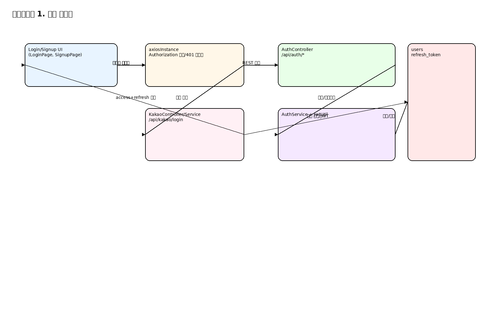
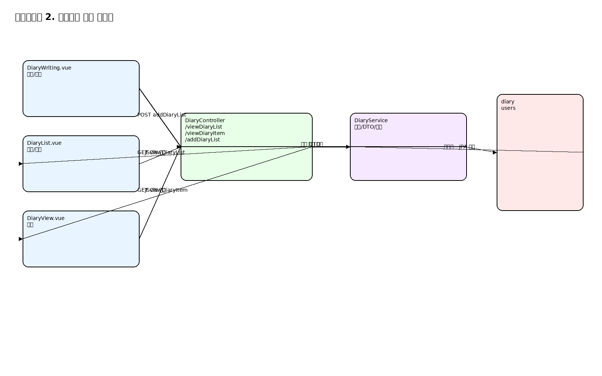
/api/auth/refresh 호출.showOnlyMine에 따라 userId 파라미터 분기.diaryStatus와 작성자 ID를 다시 필터링.diaryId + userId 둘 다 필요하며 누락 시 조기 종료.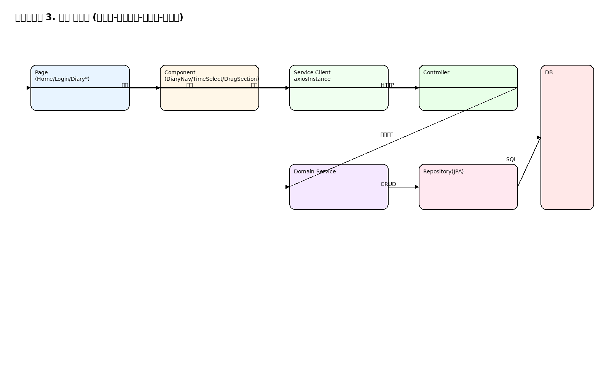
화살표 의미:
- Page -> Component: 화면 구성 및 사용자 이벤트 수집.
- Component/Page -> Service Client: API 요청 생성.
- Controller -> Service: 도메인 규칙 적용.
- Service -> Repository -> DB: 영속화 처리.
- Controller -> Page: JSON 응답으로 렌더링 갱신.
| 화면 | API | 메서드 | 요청 필드 | 응답 필드 | 연결 DB |
|---|---|---|---|---|---|
| 로그인 | /api/auth/login |
POST | email, password |
accessToken, refreshToken |
users, refresh_token |
| 카카오 로그인 | /api/kakao/login |
POST | accessToken |
accessToken, refreshToken, kakaoUserInfo |
users, refresh_token |
| 회원가입 | /api/auth/register |
POST | userId, username, password, phone, email |
성공 메시지 | users |
| 인증코드 발송 | /api/auth/signup |
POST | body:email, params:message |
message/email | (코드상 Map/메일 전송, 사용자 verify 연동) |
| 인증코드 확인 | /api/auth/verify-code |
POST | email, code |
성공/실패 문자열 | users.verification_code, users.verifyYn |
| 코드 재전송 | /api/auth/resend-code |
POST | email |
성공/실패 문자열 | users.verification_code |
| 일기 저장 | /api/diary/addDiaryList |
POST | email,userId,title,content,emotion,tag1~3,selectedTimes,drug* |
{success:true} |
diary.*, users.user_sqno |
| 일기 목록 | /api/diary/viewDiaryList |
GET | userId,pageNo,pageSize |
diaryList,total,page,pageSize,message |
diary, users |
| 일기 상세 | /api/diary/viewDiaryItem/{diaryId} |
GET | path:diaryId, query:userId |
diaryItem |
diary |
| 현재 시간 | /api/timer/now |
GET | 없음 | 문자열 시간 | 없음 |
| 헬스체크 | /api/timer/health |
GET | 없음 | OK |
없음 |
| 카카오 기록 전송 | /api/kakao/sendRecord |
POST | kakaoAccessToken, stopwatchTime, pomodoroCount, pomodoroTotalTime, recordUrl |
성공/실패 메시지 | DB 직접 저장 없음(외부 전송) |
user_sqnouser_id, username, password, hashed_password, role, phone, email(unique), delYn/del_yn, verifyYn/verify_yn, socialType/social_type, verification_code, created_at, updated_atdiary_iduser_sqno -> users.user_sqnouser_id, title, content, tag1, tag2, tag3, emotion, diary_status, diary_type, del_yn, reg_dt, updt_dt, frst_reg_ipselected_times, drug_morning, drug_lunch, drug_dinnerRefreshToken(userSqno, email, refreshToken, expiration)email_verification: 인증 코드/만료시간 저장 용도.diary_views: 일기 조회 이력.chats, webrtc_connections: 사용자 간 메시지/연결 추적.user_info: 카카오 프로필 성격의 사용자 정보 보관.diary.user_sqno, diary_views.diary_id/viewer_sqno, chats.sender/receiver, webrtc caller/receiver.refresh_token.email, email_verification.email 등은 코드에서 식별자로 사용되나 schema.sql의 FK 선언과는 별개로 관리됨.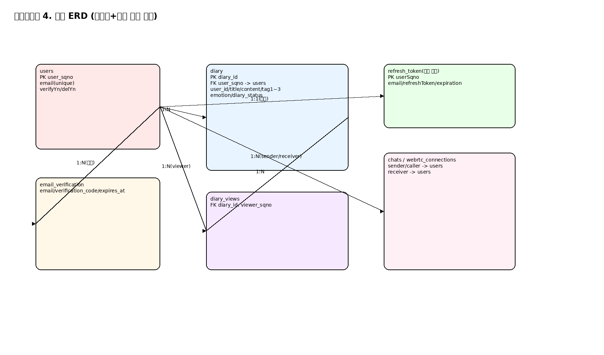
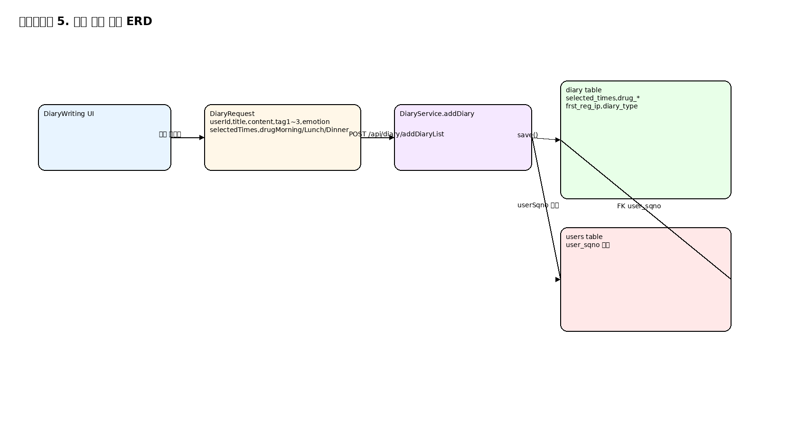
DiaryRequest -> DiaryService -> diary/users로 연결되는 경로를 분리해 보여줍니다./home/runner/work/Diary/Diary/Ai-Diary-server/src/main/resources/application.propertiesspring.datasource.*jwt.secret-key, jwt.issuerspring.mail.*KAKAO_CLIENT_ID, KAKAO_REDIRECT_URI/home/runner/work/Diary/Diary/Ai-Diary-server./mvnw spring-boot:runGET /api/timer/health가 OK/home/runner/work/Diary/Diary/Ai-Diary-vuenpm install && npm run devpage/LoginPage.vue, page/SignupPage.vue, controller/AuthController.java, service/AuthService.javapage/Diary*.vue, controller/DiaryController.java, service/DiaryService.java, diary/domain/*components/LoginView.vue, controller/KakaoController.java, service/KakaoService.javaunit/axiosInstance.js, util/JwtAuthenticationFilter.javanpm run buildnpm run test:unitnpm run lint./mvnw test./mvnw packageAi-Diary-server/README.md에 정리되어 있습니다.| 증상 | 1차 확인 | 원인 후보 | 조치 |
|---|---|---|---|
| 프런트 실행 실패 | npm run dev 로그 |
라우터 파일명 대소문자 불일치(ConfirmPassword2.vue) |
라우터 import와 실제 파일명 정합 확인 |
| 로그인 후 API 401 반복 | Network 탭 + /api/auth/refresh 응답 |
refresh 쿠키 누락/만료/DB 불일치 | 쿠키 도메인/SameSite/Secure 설정과 refresh_token 레코드 점검 |
| 일기 상세가 빈 화면 | URL의 diaryId, userId |
query userId 누락 시 호출 중단 |
목록에서 이동 URL 파라미터 전달 확인 |
| 일기 저장 403 | 요청 body email vs 인증 사용자 |
요청 이메일/토큰 사용자 불일치 | localStorage 사용자값과 요청 payload 동기화 |
| 카카오 전송 실패 | /api/kakao/sendRecord 응답 |
Authorization 또는 kakaoAccessToken 누락 | 로그인 상태/토큰 저장 키 점검 |
| 서버는 뜨는데 시간 위젯 미표시 | /api/timer/now 호출 |
CORS/프록시 경로 문제 | SecurityConfig CORS 허용 도메인과 프런트 baseURL 점검 |
./images/...로 통일, 로컬 렌더링 기준 정상.